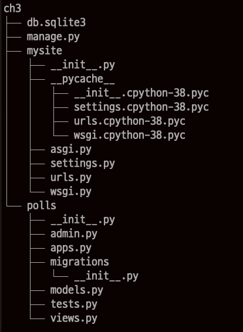

프로젝트 뼈대 만들기
프로젝트를 위해 필요한 디렉토리 및 파일을 구성하기
설정파일 셋팅하기
기본 테이블 생성하기
슈퍼유저 생성하기
프로젝트 하위에 애플리케이션 개발을 위한 디렉토리와 파일을 구성하기
1. 프로젝트 디렉토리 및 파일의 구성
- 프로젝트 뼈대가 완성된 디렉토리 체계 + templetes 디렉토리, static 디렉토리, logs 디렉토리등 필요한 디렉토리 추가
[ch3] ------db.sqlite3
|---manage.py
|---[mysite]------__init__.py
| |---settings.py
| |---urls.py
| |---wsgi.py
|---[polls]-------__init__.py
|---admin.py
|---apps.py
|---[migrations]------__init__.py
|---models.py
|---tests.py
|---views.py
- 뼈대 디렉토리에 대한 설명
| 항목명 | 설명 |
|---|---|
| ch3 디렉토리 | 최상위 루트 디렉토리. 그냥 디렉토리일 뿐임. settings.py 파일에서 BASE_DIR 항목으로 지정됨 |
| db.sqlite3 | 데이터베이스 파일, 테이블이 들어 있음 |
| manage.py | 장고 명령어 처리하는 파일 |
| mysite 디렉토리 | 프로젝트명으로 만들어진 디렉토리, 프로젝트의 최상위 프로젝트 관련 파일들이 들어 있음 |
| init.py | 디렉토리에 있으면, 패키지로 인식함 |
| settings.py | 프로젝트 설정파일 |
| urls.py | 최상위 URLconf 파일 |
| wsgi.py | 웹서버와 연동하기 위한 WSGI 연동 파일 |
| polls 디렉토리 | 애플리케이션명으로 생성된 디렉토리 해당 애플리케이션 파일들이 들어 있음 |
| init.py | 이 파일이 있으면 파이썬 패키지로 인식함 |
| admin.py | Admin 사이트에 모델을 등록해주는 파일 |
| apps.py | 어플리케이션의 설정 클래스를 정의 |
| migrations 디렉토리 | 데이터베이스 변경사항 관리하기 위한 디렉토리 |
| models.py | 데이터베이스 모델 클래스 정의 |
| tests.py | 단위테스트용 파일. 없어도 됨 |
| views.py | 뷰 함수 정의 |
| templetes 디렉토리 | 프로젝트별 템플릿과 어플리케이션별 템플릿을 위한 디렉토리를 생성함 mysite/templetes 및 polls/templetes 위치에 생성됨 |
| static 디렉토리 | 정적파일들을 저장(CSS, javascript파일, image 등) 프로젝트 레벨과 어플리케이션 레벨에 생성됨 mysite/static 및 polls/static 위치에 생성될 수 있음 |
| logs 디렉토리 | 로그파일들이 생성되는 디렉토리 settings.py 파일에 LOGGING 항목으로 위치가 지정됨 |
2. 프로젝트 뼈대 생성하기
프로젝트는 django-admin startproject 명령어로 생성함 어플리케이션은 python manage.py startapp 명령어를 이용하여 생성함
- 전체 작업 미리보기
>django-admin startproject mysite //mysite라는 프로젝트 생성,base_dir(root 디렉토리) 도 mysite로 생성됨, 후에 mysite 라는 이름은 추후 원하는 이름으로 변경해도 됨.
> mv mysite rootdir //하위의 프로젝트 디렉토리와 햇깔릴 수 있으므로, base 디렉토리를 다른 이름으로 변경함
> cd mysite // base 디렉토리 안으로 이동
>python manage.py startapp polls //manage.py 파일은 장고 명령어를 처리하는 파일임. polls 이라는 어플리케이션을 생성
> cd mysite // 프로젝트 관리 디렉토리로 이동
>notepad settings.py //settings.py 파일을 열어 설정을 확인함
> cd .. //base 디렉토리로 이동, manage.py 파일이 base 디렉토리 하위에 있기 때문에...
>python manage.py migrate //데이터베이스에 기본테이블 생성, db.sqlite3 파일이 생성됨
>python manage.py runserver //현재까지 생성된 작업을 테스트용 서버에서 확인, 웹 브라우저에서 http://localhost:8000 으로 확인함.
(1) 프로젝트 생성하기
$ > django-admin startproject mysite
$ > cd mv mysite dootdir
- mysite base 디렉토리와 하위에 mysite 프로젝트 관리 디렉토리가 생성됨
- base 디렉토리와 프로젝트 디렉토리 이름이 같으면 햇깔리므로 base 디렉토리 이름을 변경함
- mysite 프로젝트 디렉토리 하위에 init.py, wsgi.py, asgi.py, urls.py, settings.py 파일이 생성됨
(2) 어플리케이션 생성하기
$ > cd rootdir
$rootdir > python manage.py startapp polls
- polls 디렉토리 생성
- polls 하위에 admin.py, apps.py, migrations, models.py, tests.py views.py, init.py 생성됨
(3) 프로젝트 설정파일 확인 및 변경
mysite 프로젝트 디렉토리 하위의 settings.py 파일을 변경.
각종 디렉토리 위치, 로그 형식, 프로젝트에 포함된 어플리케이션들의 이름등이 정의되어 있음.
$ mysite > vim settings.py
ㄱ. ALLOWED_HOSTS 항목
DEBUG=True 면 개발모드, false 면 운영모드
운영모드의 경우, 반드시 ALLOWED_HOSTS에 서버의 IP나 도메인을 지정해야 함
ALLOWED_HOSTS = ['localhost','127.0.0.1']
ㄴ. INSTALLED_APPS 항목
프로젝트에 포함되는 어플리케이션을 모두 설정파일에 등록
간단하게 어플리케이션 이름 (polls)을 등록해도 되지만, 어플리케이션의 설정 클래스를 등록하는 것이 더 정확함
polls 의 어플리케이션 설정 클래스는 polls 하단의 apps.py 파일내에 있음
INSTALLED_APPS = [
'django.contrib.admin',
'django.contrib.auth',
'django.contrib.contenttypes',
'django.contrib.sessions',
'django.contrib.messages',
'django.contrib.staticfiles',
'polls.apps.AppConfig'
]
ㄷ. DATABASES 항목
장고는 default로 SQLite3 데이터베이스 엔진을 사용하도록 설정됨
다른 데이터베이스 엔진으로 변경 할 수도 있음
DATABASES = {
'default': {
'ENGINE': 'django.db.backends.sqlite3',
'NAME': BASE_DIR / 'db.sqlite3',
}
}
ㄹ. 타임존 항목 지정
‘UTC'(섹계표준시)로 되어 있는 것을 ‘Asia/Seoul'로 변경
# TIME_ZONE = 'UTC'
TIME_ZONE = 'Asia/Seoul'
- USE_TZ 항목
- USE_TZ=True 로 설정하면, DB는 UTC 시간으로 저장되고 UI 처리시에는 TIME_ZONE 항목에 설정된 시간대를 반영하여 처리
- USE_TZ=False 로 하면, DB와 UI 모두 TIME_ZONE 항목에 설정된 시간대로 반영됨
- USE_TZ=True 로 하면, 일광절약시간제를 반영하여 알아서 계산해 줌
- 우리나라의 경우, 일광절약시간제를 사용하지 않기 때문에, USE_TZ을 False로 설정하는 것이 더 편리함
(4) 기본 테이블 생성하기
사용자 및 그룹 테이블등을 기본적으로 생성해주는 작업
migrate 명령을 실행하면 db.SQLite3 파일이 자동 생성됨
$ rootdir> python manage.py migrate
(5) 지금까지 작업한 것 확인하기
$ rootdir> python manage.py runserver 0.0.0.0:8000 // 주소 0.0.0.0 의 의미는, 현재 명령을 실행하는 서버의 ip와 무관하게 웹 접속을 받겠다는 의미
- runserver 사용법
-
python manage.py runserver : 디폴트로 127.0.0.1:8000 을 사용함
-
python manage.py runserver 8888 : 127.0.0.1:8888 을 사용함
-
python manage.py runserver 0.0.0.0:8000& : &를 명령 끝에 추가하면, 백그라운드에서 실행함
-
(6) 자동생성된 관리자 화면 확인하기
- http://127.0.0.1:8000/admin 으로 접속
- id, pw 입력창 보여짐 : 관리자(superUser) 생성이 필요함
$>python manage.py createsuperuser
- console 화면의 지시에 따라 Username, Email, Password, Password(again) 을 입력하여 관리자 계정 생성
- http://127.0.0.1:8000/admin 으로 접속하여 생성한 계정으로 로그인 함
- Users와 Groups 테이블이 보임 => django.contrib.auth 애플리케이션에 User와 Group 이 미리 정의되어 있기 때문에 보여짐
(7) 생성된 프로젝트 뼈대 확인하기
# window
$ C:> tree /F rootdir
# macos
> brew install tree
> tree rootdir
